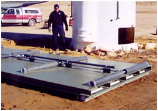

|
Artificial circulation was the first aeration method developed. When successful, it mixes the entire water body, expanding the warm surface epilimnion all the way to the bottom. The most common equipment used for the technique is diffused air "bubblers" which circulate the water from the bottom to the surface. However, there are also Solar-Driven Mechanical Mixers, Propeller/Impeller Mixers, and other devices. All perform the same basic technique: "Artificial Circulation".
The principle of Artificial Circulation (by any type of equipment) is to destroy or prevent the development of thermal stratification. This strategy works best in nutrient-rich lakes where nutrient control is not feasible, when oxygen depletion is a threat to warm water fisheries, and for control of metals accumulation in storage reservoirs (not direct source terminal supply reservoirs). Lake temperature is homogenized which adversely impacts coldwater fishery habitat and zooplankton refuge. In over 50 percent of reported case studies water clarity declined following artificial circulation (Pastorak, et al. 1982). Artificial circulation eliminates the use of depth-selective supply withdrawal for optimizing Raw Water Quality from Distribution Reservoirs (Kortmann et al. 1988; Kortmann, 1989; Cooke and Carlson, 1989). The benthic flux of dissolved constituents from sediment-interstitial to overlying waters is driven by Fickean Diffusion and is a function of the concentration gradient across the sediment interface (Kortmann, 1980; Kortmann, 1981). Perhaps the most important, and least well known, effect of artificial circulation is the intensification of concentration differential at the benthic interface and consequential benthic flux of a variety of pore-water constituents. Epilimnetic expansion to a design depth rather than all the way to the bottom may accomplish management goals in some cases while reducing adverse impact potential (Kortmann, 1991).
Seasonal Use of Artificial Circulation can be very beneficial for extending spring mixing and dominance of the Phytoplankton Community by Diatoms (delaying thermal stratification). It can also be beneficial for controlling loss of stratification in the Fall.
Artificial Circulation can be an effective management approach in some water bodies that intermittently stratify (polymictic), and mixing can be accomplished in a downward direction to avoid bringing bottom-generated nutrients to the surface where algae growth is greatest.
Most existing Artificial Circulation Systems can be converted to more effective aeration approaches. |